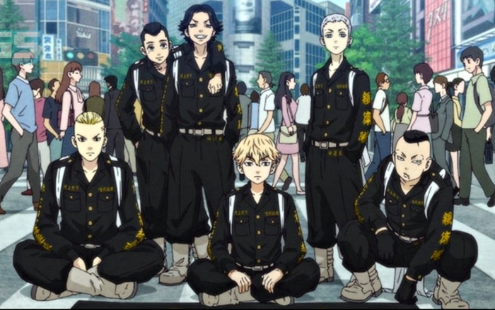

The Tokyo Manji Gang (東京卍會, Tōkyō Manji-Kai?), often abbreviated as Toman (東卍, Tōman?), is a biker gang based in Shibuya, Tokyo. It was known for its honorable ideals and beliefs that contributed to its goal in establishing a new golden era for delinquents in the Kanto region.[3] However, this image crumbled as its ranks were continually corrupted and transformed into a criminal organization that took the lives of innocent civilians in the present day.[4]